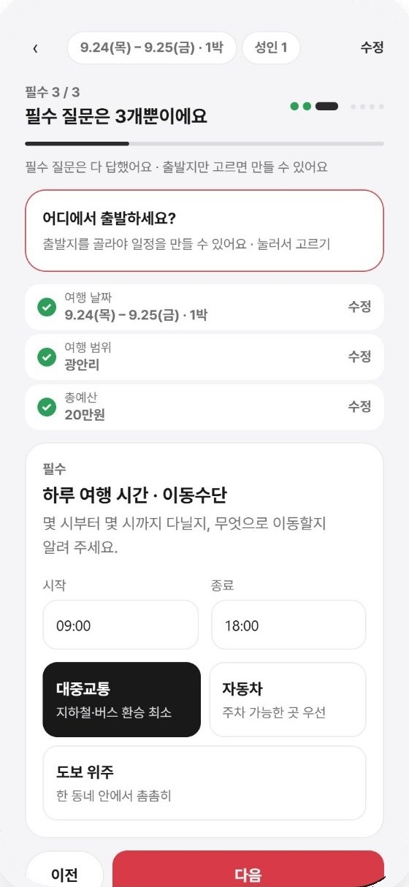
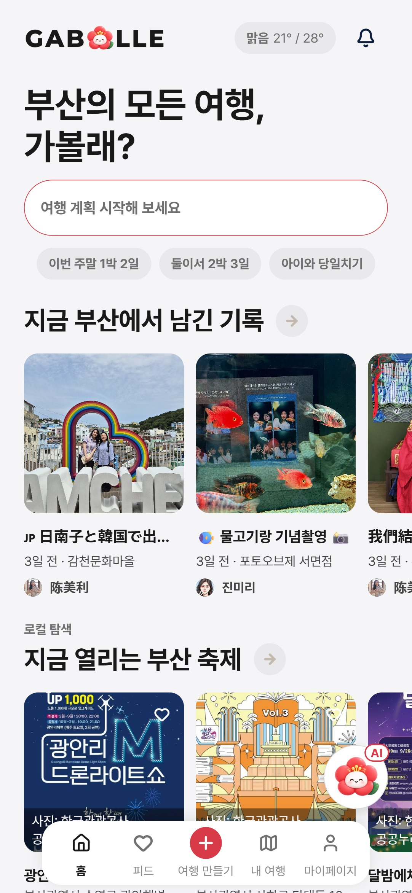

01
로그아웃을 즉시 반영하는 인증 구조
토큰 유효기간이 남아 있어도 로그아웃한 사용자의 접근은 막아야 했습니다. 요청마다 서버 세션을 확인하고, 갱신 토큰 재사용도 탐지해 차단했습니다. 웹에는 HttpOnly Cookie로, 모바일에는 JSON으로 토큰을 전달했습니다.
Spring Security · JWT · 서버 세션
부산 여행을 취향과 조건에 맞추는 서비스
부산 여행자의 취향과 이동·식단·접근성 조건에 맞춰 장소와 일정을 추천하고, 여행을 기록하고 공유할 수 있는 서비스입니다.
팀장으로서 인증, 여행·추천 작업, 기록·피드와 동행·공유의 Spring Boot REST API 전반을 구현했습니다.
여행 장소와 이동 경로를 함께 보여주는 화면입니다. 사용자 피드백을 받아 지도에서 루트가 더 잘 보이도록 다듬었습니다.
담당: 여행·장소 조회, 경로 조회와 외부 경로 연동 API

| 기능 | 직접 구현한 API와 처리 |
|---|---|
| 인증·사용자 | 이메일·소셜 로그인, 토큰 갱신, 로그아웃과 사용자·세션 관리 |
| 여행·추천 작업 | 여행 생성·목록·상세·삭제, 조건 저장과 추천 접수·상태·결과 조회 |
| 장소·경로 | 장소 조회, 두 좌표 사이의 경로 조회와 외부 경로 연동 |
| 기록·피드 | 여행 기록 생성·조회·수정·삭제, 미디어 저장, 피드·팔로우 |
| 동행·공유 | 동행 초대, 여행 공유와 공유 여행 복제 |
토큰 유효기간이 남아 있어도 로그아웃한 사용자의 접근은 막아야 했습니다. 요청마다 서버 세션을 확인하고, 갱신 토큰 재사용도 탐지해 차단했습니다. 웹에는 HttpOnly Cookie로, 모바일에는 JSON으로 토큰을 전달했습니다.
날짜·예산·이동 조건과 취향을 저장하고, 같은 요청을 다시 보내도 중복 여행이 생기지 않도록 했습니다. 긴 추천 계산은 접수 응답(202)과 작업 번호(jobId)를 먼저 반환하고, SSE와 조회 API로 진행 상태와 완료 결과를 전달했습니다.
여행 기록과 미디어, 피드·팔로우를 구현했습니다. 글과 사용자·여행 관계는 DB에, 미디어 파일은 별도로 저장했습니다. 파일 저장 방식을 바꿔도 기록 처리 코드에 영향이 덜 가도록 공통 인터페이스(StoragePort)로 Local/S3 구현을 분리했습니다. 동행 초대, 여행 공유와 복제 API도 연결했습니다.
Spring API는 여행과 작업 상태를 DB에 저장·조회합니다. 긴 추천 계산은 같은 백엔드 내부의 별도 실행기로 넘기고, 화면은 진행 상태와 결과를 확인합니다.
화면이 날짜·예산·이동 조건과 취향을 보내면 여행 정보와 조건을 저장하고, 계산이 끝나기 전에 작업 번호(jobId)를 먼저 돌려줍니다.
앱을 출시해 서비스 중이며 회원은 약 80명입니다(2026.10.21 기준). FLY ASIA 창업박람회에 참가해 투자자와 사용자에게 서비스를 보여주고 피드백을 받았습니다.
이용 이력이 쌓이지 않은 신규 사용자에게도 추천할 수 있도록, 출시 전 180명에게 직접 설문을 받아 초기 추천에 필요한 정보를 확보했습니다.
피드백을 반영해 지도에서 여행 경로가 더 잘 보이도록 수정했습니다.
여행 생성에 필요하지 않은 정보 수집을 없애고 절차를 간편하게 했습니다. 기능을 두 단계 안에서 찾을 수 있도록 동선도 검토했습니다.

여행 생성 화면

앱 홈 화면
서버 API는 직접 호출하면 응답했지만, 배포된 웹에서는 소셜 로그인 화면으로 이동하지 않거나 인증 후 돌아올 화면을 찾지 못했습니다. 서버 설정과 앱·서버 연동, 빌드 결과물, 화면 전환을 차례로 확인하며 요청 흐름을 추적했습니다.
실행 컨테이너의 환경변수뿐 아니라 실제 배포 JavaScript 번들을 확인했습니다. 번들의 client ID가 비어 있고 API 주소가 localhost인 점을 확인했으며, 누락된 콜백 라우팅을 보완했습니다.
Jenkinsfile·Dockerfile의 설정 전달 경로, 앱과 서버의 redirect URI, 실제 번들과 콜백 화면을 대조했습니다. 네이버 동의 화면부터 토큰 교환 단계까지 확인하고 콜백 라우팅을 보완했습니다.
새 후보 200개를 저장하기 전에 존재 여부를 200번 조회하고 저장도 한 건씩 처리하고 있었습니다. ID를 미리 부여한 새 데이터라서, 기존 데이터인지 먼저 조회하는 경로(merge)로 처리됐기 때문입니다. 조회 없이 바로 저장하는 방식(persist)과 여기에 50개씩 묶어 저장하는 방식을 비교했습니다.
| 방식 | 저장 p95 | 실행된 저장 방식 |
|---|---|---|
| 기존 | 171.59ms | SELECT 200 + 개별 삽입 |
| 신규 바로 저장 | 123.91ms | 존재 조회 0 + 개별 삽입 |
| 50개 묶음 | 52.52ms | 존재 조회 0 + 50개 배치 |
방식별로 처음 3건은 예열로 제외하고 20건을 측정했습니다. 각 방식에서 실제로 200행이 저장됐고, 기존 트랜잭션과 후보·점수·코스 내용이 보존되는지, 오류 시 롤백되는지 확인했습니다.
SQL 계측을 켠 로컬 저장 구간의 비교입니다.
출시 후 피드백으로 여행 생성에 필요하지 않은 입력을 덜었습니다. 기능을 추가하기 전에 각 입력이 꼭 필요한지, 처음 쓰는 사람이 추천 결과까지 쉽게 도달하는지 확인할 필요가 있었습니다.
180명 설문으로 이용 이력이 부족한 사용자에게 추천할 초기 데이터를 마련했습니다. 이후 개선 과제로는 사용자가 어떤 추천을 선택하고 바꾸는지 살피고, 계산 시간과 함께 추천 결과의 적합성을 확인하는 일을 남겼습니다.
서버 API가 정상 응답해도 배포된 웹에서는 로그인 화면 전환에 문제가 있었습니다. 최종 배포 환경에서 로그인부터 여행 생성과 추천 결과 확인까지 이어서 점검해야 했습니다. 재시작 시 진행 중인 작업을 다시 처리하거나 실패로 바꾸는 기준도 설계에 포함할 항목으로 정리했습니다.